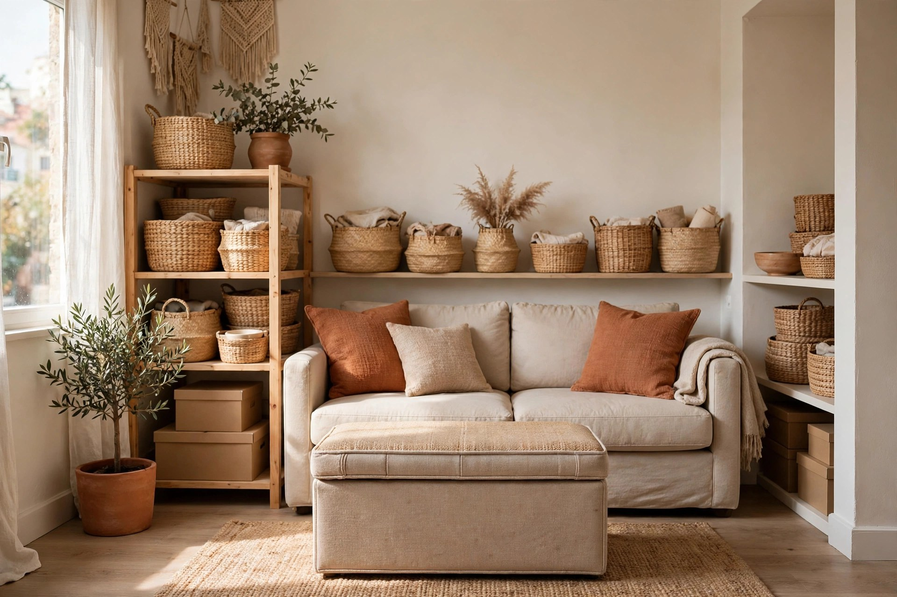

Small Space Storage & Organisation
Small Apartment Storage Ideas for Every Room Under $50
Intro
Storage is not a bedroom problem or a kitchen problem — it is a whole-flat problem. Every room in a small apartment has one wasted space: under the bed, above the door, behind the sofa, on top of the wardrobe. Fix one space per room, and the whole flat feels bigger.
This guide has 12 whole-flat storage ideas — one cheap fix per room — for under $50 in total. Each one lists what it costs, and most need no drilling. All are renter-friendly. The rule is simple: use the space you already have before you buy anything new.

1. Living room: a storage ottoman — $25–$35
A storage ottoman at the foot of the sofa holds blankets, books and chargers, and works as a seat and a footrest. It costs about $30 and does three jobs at once. Keep in it only the things you use every day. Choose an ottoman with a removable lid, so you can lift it with one hand.
2. Living room: a narrow shelf behind the sofa — $12–$20
If there is 10–15 cm of space between the sofa and the wall, a narrow shelf fits there. Books, a phone charger and a small lamp — everything within reach, with nothing on the floor. A slim shelf costs about $15.
3. Bedroom: flat boxes under the bed — $15–$25
The space under the bed is the biggest wasted space of all. Put off-season clothes, extra bedding or shoes in flat, clear boxes. Add labels so they are easy to find. A bed skirt will hide the boxes.
4. Bedroom: a hanging shelf in the wardrobe — $8–$12
A hanging fabric shelf divides one wardrobe shelf into 2–3 sections. Keep T-shirts, jeans or folded clothes in separate compartments. That almost doubles the capacity of one shelf.
5. Kitchen: a rail on the wall — $8–$12
A wall rail with hooks holds mugs, utensils and scissors, and frees a whole cupboard shelf. It costs about $10 and takes ten minutes to fit with adhesive strips. Keep the rail at hand height, above the worktop. Hang the mugs you use daily on the rail, and keep the rest in the cupboard.
6. Kitchen: shelf risers inside cabinets — $6–$10
A shelf riser inside a cabinet doubles the usable space — plates below, bowls above. Two risers cost about $8 and fit any cabinet. Measure the cabinet height first, so the riser fits under the shelf above.
7. Bathroom: a shelf above the toilet — $12–$20
Two short floating shelves above the cistern hold baskets and toiletries, using the most wasted space in the bathroom. Keep the lower shelf above head height when you stand up, so nothing bumps you. Two shelves cost about $15.
8. Bathroom: hooks behind the door — $5–$10
An over-door hook rail holds two or three towels behind the bathroom door — space that was completely empty. Over-door hooks need no drilling and come off without a mark. Use one hook per towel, so they dry properly.
9. Hallway: a narrow console with baskets — $15–$25
A narrow console table in the hallway holds keys, post and bags in two baskets underneath. It costs about $20 and stops the hallway pile-up. Choose a console no deeper than 25 cm, so it does not block the walkway. A console with a drawer holds the post, so letters never pile up on the table.
10. Hallway: hooks at two heights — $5–$8
Two rows of hooks in the hallway — one high for coats, one low for children and bags — use the wall instead of the floor. Four hooks cost about $6 and fit with adhesive strips. One hook per person keeps the coats sorted.
11. Every room: a basket by the door — $6–$10
A basket by each room's door holds the things that belong in that room — shoes by the front door, books by the bedroom door, cleaning supplies by the bathroom door. Three baskets cost about $15 and stop things migrating around the flat.
12. Every room: one thing in, one thing out — $0
The cheapest idea costs nothing. When something new comes into the flat, something old goes out. In a small apartment, this rule makes the biggest difference of all — no new clutter, ever.
Conclusion
Storage is not about buying more furniture — it is about using the wasted spaces you already have. One ottoman, one shelf, one rail and one basket per room can organise a whole flat for under $50, without drilling a single hole. Start with the room that bothers you most, and the rest will follow. One fix per room is enough — twelve small fixes add up to a whole new flat.
Budget recap
- Storage ottoman: ~$30 - Shelf risers + wall rail: ~$18 - Baskets + hooks: ~$15
Total for a whole-flat setup: ~$50 — or ~$15 if you start with baskets and hooks.
Pinterest pin titles
- ""Small Apartment Storage Ideas for Every Room Under $50""
- ""12 Storage Fixes, One Per Room, Under $50 Total""
- ""Whole Flat, $50: 12 Storage Ideas for Every Room""